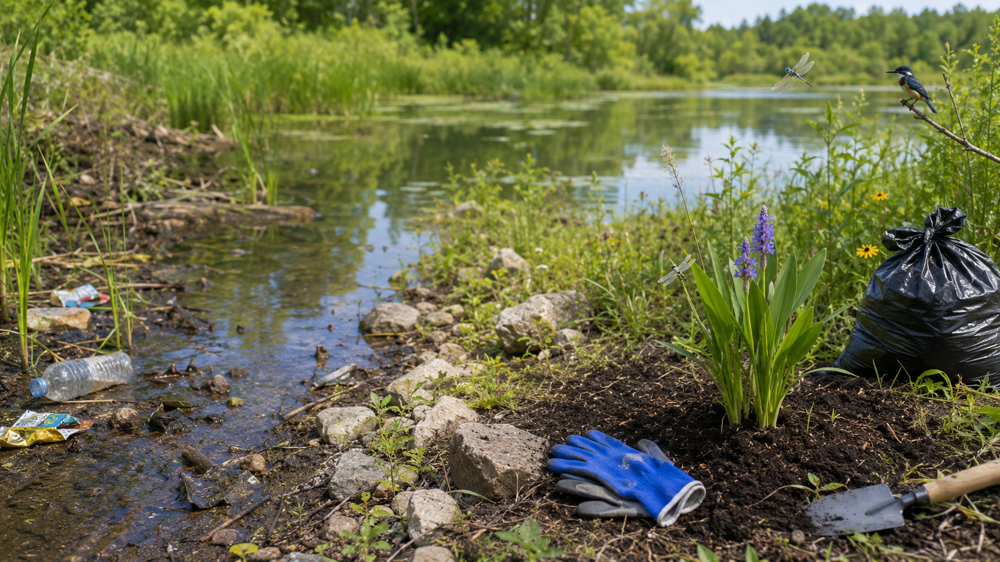
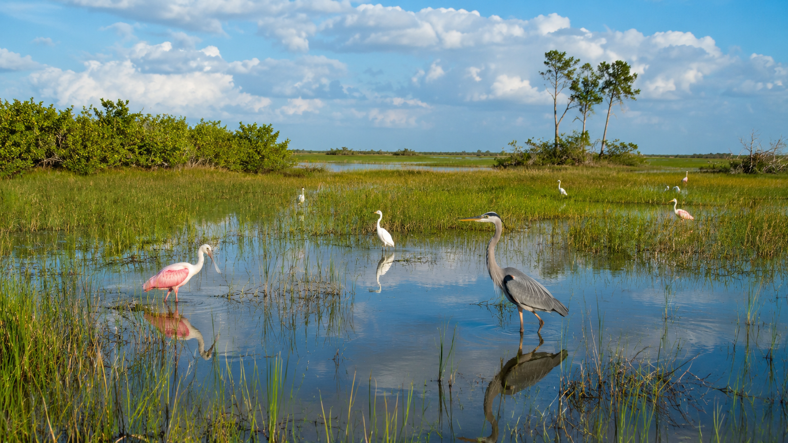
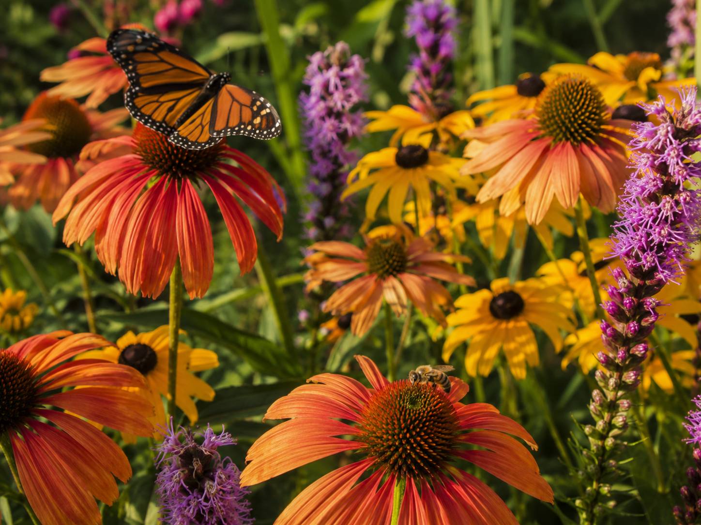
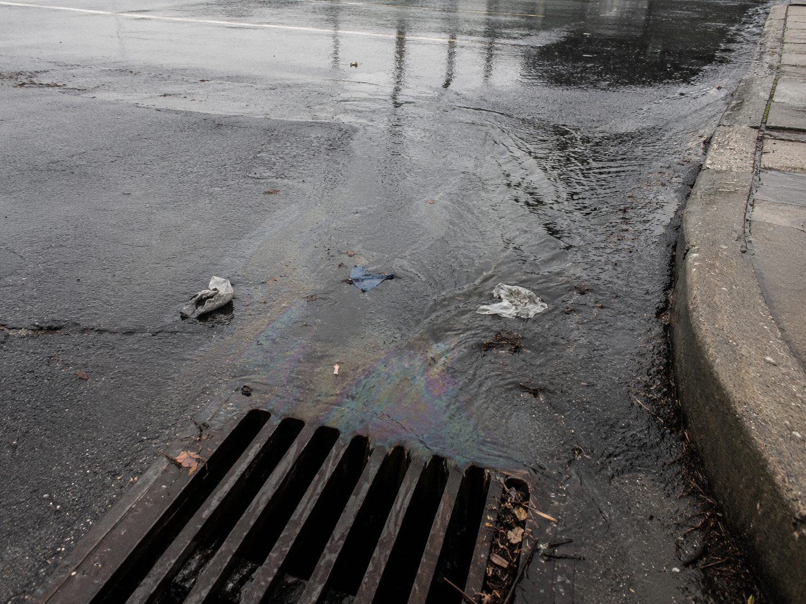

Keep this question in mind as you work through the lesson. By the end, you'll have real evidence to answer it.
Start here. Learn the words you will use today.
Think about a place in nature near where you live — a park, a stream, a field. People visit places like that every day. Some leave things better than they found them. Some don't.
There's no wrong answer here. Scientists always start by noticing and asking. Your question might end up being something you can answer by the time you finish today's work.
These are the words scientists use when they study how living things and people share the same spaces. Tap each card to flip it and read the definition.
Copy this sentence carefully into your science notebook:
"Small human choices can change the homes of many living things."
Now learn the main science idea.

Every day, people use things that come from ecosystemsecosystemAll the living and nonliving things in one place that interact with each other. — water, wood, soil, food, and land. We need these things to live, just like other animals do.
When people use resourcesresourceSomething living things need to survive — water, food, shelter, or space., they often change the habitathabitatThe place where an organism lives and finds what it needs. for plants and animals that already live there. Even a small change — like a new path through the woods — can shift what organisms can find and where they can live.
Some human actions make it harder for organisms to survive. Trash and pollutionpollutionHarmful materials added to the environment — like litter, chemicals, or dirty water. can remove clean water. Cutting down forests takes away shelter. Paving land removes space that animals depend on.
When a habitathabitatThe place where an organism gets food, water, shelter, and space. changes too much, organisms may struggle to find what they need — and some may leave or die. The impactimpactAn effect or change caused by something. doesn't have to be huge to matter. Even one pond full of litter can drive away fish, frogs, and the birds that feed on them.
People can also protect and restore ecosystems. Planting native wildflowers gives bees and butterflies food and shelter. Picking up trash clears harmful materials from water and soil. Saving water keeps streams flowing for fish and the animals that drink from them.
Good conservationconservationProtecting and caring for natural resources and the living things that depend on them. reduces harm and gives organisms what they need to survive. A solution that just looks nice but doesn't restore food, water, shelter, or space isn't really working.
Real-World Connection: In the Florida Everglades, scientists are restoring the flow of fresh water that human-built canals once blocked. As the water comes back, wading birds, alligators, and native plants are returning to areas where they had disappeared.

Human actions can harm or help ecosystems by changing the resources organisms need — food, water, shelter, and space.
When resources disappear, organisms struggle to survive. When resources are restored, organisms can return and thrive.
Curious? Go Deeper
How fast can an ecosystem change? Some habitat changes happen slowly — like a forest that takes decades to grow back after logging. But some are fast. When a river is dammed, fish populations can drop within a single season because their migration path is suddenly blocked.
Scientists use something called an ecological threshold — a tipping point where an ecosystem can no longer bounce back on its own and needs active human help to recover. That's exactly what happened in the Florida Everglades: decades of drained wetlands pushed the system past the point where it could fix itself. Now scientists are spending billions of dollars to undo what took decades to damage.
The lesson? It's almost always cheaper and easier to protect an ecosystem before it's damaged than to restore it after.
Now test the idea yourself.
Quick Reference: Helpful = makes it easier for organisms to get food, water, shelter, or space. Harmful = removes or damages a resource organisms need. Both = helps some organisms, harms others.
A group of neighbors organizes a Saturday cleanup. They remove plastic bottles and wrappers from the banks of a local pond. The water stays clear and frogs return to the area within weeks.
A new road is built through a forest to connect two towns. Trees are cleared along a 200-meter strip. Deer trails are cut off and bird nesting sites disappear. Car noise fills an area that was once quiet.
A family plants native wildflowers in their backyard where lawn grass used to grow. Bees and butterflies begin visiting within a month. A pair of hummingbirds builds a nest nearby by late summer.

After heavy rain, dirty water runs off a large parking lot into a nearby stream. The runoff carries motor oil, salt, and trash. Small invertebrates that fish depend on for food begin to disappear.

Follow these steps in your science notebook. You'll need your chart (below) to organize what you find.
Sort each case. Copy the chart below into your notebook. For each case, decide: does this human action mostly help, mostly harm, or could it do both? Write your answer in Column 2.
Name the resource. Look at each case again. Which resource — food, water, shelter, or space — is most affected? Write it in Column 3.
Find the evidence. Write one sentence from the case that helped you decide. That sentence is your evidence — copy it into Column 4.
Design a solution. Pick one harmful case. In your notebook, draw or describe one thing that could reduce the harm and help organisms get what they need.
| Case | Helpful / Harmful / Both | Resource Affected | Evidence (one sentence) |
|---|---|---|---|
| A | write here | write here | write here |
| B | write here | write here | write here |
| C | write here | write here | write here |
| D | write here | write here | write here |
Think about each of these questions. Use your chart and the case details to help you.
Tell the full story of one case from beginning to end: what the human action was, which resource changed, which organism was affected, and what a solution could look like. Use your evidence to back up each part.
Think through each question. Write your answer in your notebook — a sentence or two is enough.
Check what you understand.
Show what you learned.
🔍 Part A — Identify and Sort
For each task below, use what you learned in the lesson and the case files. Write your answers in your science notebook.
🚀 Part B — Short Answer
Answer in complete sentences. Use vocabulary words when you can.
Think about everything you learned today. Which human action — helpful or harmful — do you think has the biggest impact on an ecosystem? Use evidence from the lesson or case files to explain your thinking.
What do you think?
💡 Start with: "I think the biggest impact is… because…"
What did you observe or learn that supports your thinking?
💡 Start with: "I know this because the lesson showed… / In Case ___, I noticed…"
Why does that make sense?
💡 Start with: "This makes sense because organisms need…"
📚 Try to use at least one of these words: ecosystem, habitat, resource, pollution, conservation
🎨 Part C — Draw & Label
Draw the same ecosystem before and after a human action. Label at least 4 parts: an organism, a resource, a habitat change, and one conservation solution you would add.
Submit your work on Canvas using one of these options:
Make sure your submission includes all of these: